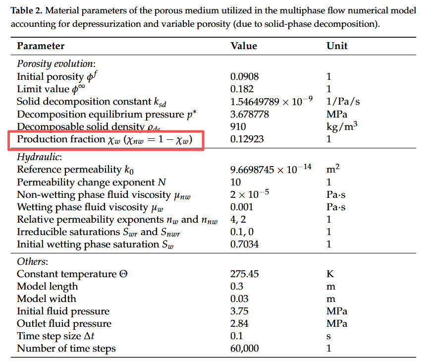

Hybrid Explicit-Implicit FEM for Porous Media Multiphase Flow with Possible Solid-Phase Decomposition
Journal of Marine Science and Engineering, 14(2):217, 2026.
Multiphase flow in porous media is ubiquitous in physical processes, yet modeling it consistently remains difficult, and sometimes it can be coupled with solid-phase decomposition and phase change, such as in hydrate dissociation or internal erosion processes. Recent code comparison studies have highlighted this difficulty, revealing clear inconsistencies in numerical results across different research groups for the same benchmark problem. This paper presents a new, reliable benchmark test and a hybrid explicit-implicit finite element method adaptable to various scenarios. In our mathematical framework, the solid decomposition is described by a rate equation for porosity that depends on the fluid pressure, and the phase change is modeled via mass source terms. The hybrid explicit-implicit finite element method features a novel three-stage updating strategy, which incorporates an artificial diffusion term and carefully selects the transport equation for the final saturation update. Validation results demonstrate that our proposed method achieves substantial agreement with those of the fully implicit finite volume method, confirming its reliability. Furthermore, our analysis confirms that the saturation update must use the transport equation of the incompressible fluid phase, and that the artificial diffusion term is critical for capturing physically correct saturation profiles, even when advection is not dominant. Overall, this work provides a consistent and effective tool for simulating complex multiphase flow scenarios and serves as a valuable complement to future benchmark studies.
Correction
In Table 2, the subscripts in the production fraction entry are interchanged: should read , and vice versa. The correct values are and .
